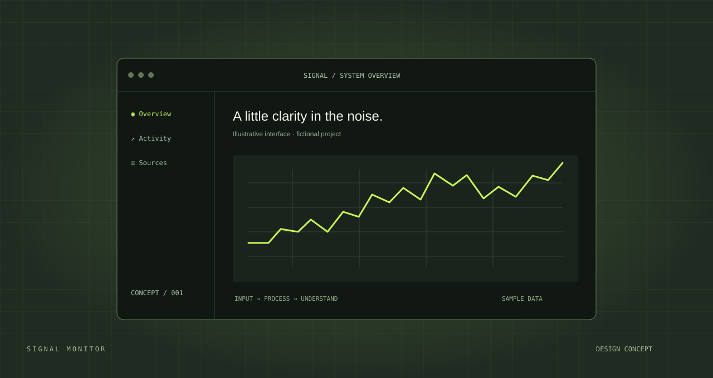
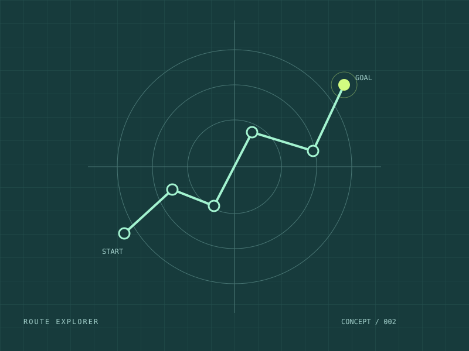
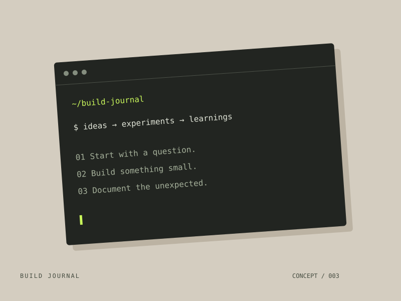

01 / Project index
Ideas into
working things.
Engineering, software, and the decisions in between. These three fictional projects demonstrate the layout; real work and technical details will replace them.

Placeholder project01 / Software / Data visualization
Signal monitor
A sample concept for turning a stream of system events into a clear, readable overview.
Dashboard conceptData visualization
Explore the sample brief
Problem. Make noisy system activity easier to interpret without burying the useful information.
Approach. This placeholder would describe event handling, chart rendering, and the tradeoffs behind the interface.
Evidence. Replace this sample with real screenshots, a source repository, and verified results.
Fictional example. No completed work or results are claimed.

Placeholder project02 / Engineering / Algorithms
Route explorer
A sample engineering concept for exploring paths, constraints, and the choices between them.
Algorithm conceptEngineering
Explore the sample brief
Problem. Explain how a path is selected when a system has multiple routes and constraints.
Approach. This placeholder would explain the chosen algorithm, system constraints, and how the solution was tested.
Evidence. Replace this sample with the actual implementation, test cases, and an explanation of your contribution.
Fictional example. No completed work or results are claimed.

Placeholder project03 / Developer tools / Documentation
Build journal
A sample developer-tool concept for keeping experiments, decisions, and lessons in one place.
Developer-tool conceptDocumentation
Explore the sample brief
Problem. Keep the reasoning behind small experiments as discoverable as the code itself.
Approach. This placeholder would describe the workflow, data format, and developer experience.
Evidence. Replace this sample with a working demo, source code, and a specific lesson learned.
Fictional example. No completed work or results are claimed.